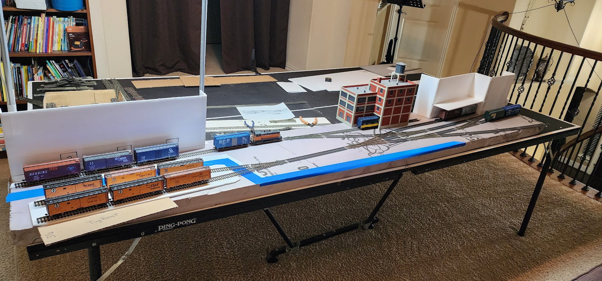

HO Train Layout #1
My first HO layout, built while living in Nac circa 1998.
Back to model railroading after more than 16 years
I've been interested in model railroading since the late 1990s, not long after I graduated from college. Over the years, I built several layouts and somehow managed to carry the hobby through at least four different house moves. Each layout was a chance to try something new, and each move meant figuring out what to keep, what to rebuild, and what to start over.
These are the three HO layouts from those years:
My first HO layout, built while living in Nac circa 1998.

A shelf/module layout built in 1999 in a Plano apartment garage.

A 20x20 foot layout built in the Green Hollow house from 2001 to 2007.
My last real layout was more than 16 years ago, in our previous house. We had a 20-by-20-foot game room over the garage, and my wife was gracious enough to let me turn the whole thing into a model train room. That's a pretty generous allocation of household real estate for one person's hobby!
When we decided to sell that house, though, the railroad had to go. I tore out the layout and packed the trains, track, and supplies into boxes so the room would show better to potential buyers. I always figured I'd build another one someday. Someday just turned into a lot of years.
Part of what I love about model railroading is how many different skills it brings together. Building the benchwork is a woodworking project. Wiring the track, switches, and controls brings in electronics. Then there's kit building, painting, weathering, scenery, structures, and all the little details that make a miniature world feel believable.
It's hard to think of many hobbies that let you do so many different kinds of making in one project. And unlike some projects, a model railroad never really has to be finished. There's always another building to detail, another piece of scenery to improve, or another operational problem to solve.
Since we moved, I've occasionally gotten the itch to pull out some track and think about a new layout. I'd sketch an idea, move a few things around, maybe spend a couple of hours imagining what I could build, and then put everything away again. Nothing ever got far enough to become an actual project.
For some reason, last week the bug came back a little stronger. Maybe it's because marching band season is over and I don't have another round of giant band props to build. Maybe it's because model railroad layouts have been showing up more often in my social media feeds. Or maybe the boxes of train stuff have simply been waiting long enough.
Whatever the reason, this time I decided to do more than just think about it. I'm going to try building a small shelf switching layout.
Rather than take over an entire room again, I'm exploring a compact HO-scale layout inspired by the rail-served waterfront of New York Harbor. The idea is an industrial switching scene with brick warehouses along the back, water along the front, and a car float bringing freight cars onto the layout.
I'm aiming for a shelf roughly eight feet long and around 18 inches deep, with no section deeper than 24 inches. The car float can extend beyond the main eight-foot length. I'd like a runaround track so I can switch industries facing in either direction, with the car float serving as the layout's only connection to the outside railroad world.
I already have a collection of Peco Code 100 small-radius turnouts, so I'm planning around the track I own rather than starting from scratch. I'm also thinking about building the benchwork in portable sections, approximately 20 by 48 inches, so the layout can come apart for transport or storage. After four moves and one demolished railroad, portability has a certain appeal.
The appeal of a switching layout is that it doesn't need miles of track or a dedicated room to be interesting. A handful of industries, a car float, and a few freight cars can create plenty of operating possibilities. I can focus on building a convincing little slice of waterfront instead of trying to model an entire railroad.
Of course, I've said things like “I'll just build something small” before. We'll see how that goes.

Early November 2026: Started sketching a portable New York Harbor-inspired shelf layout, with a car float, runaround, and rail-served warehouses.
Next: Work out a track plan that fits the space and uses the Peco turnouts I already have, then decide whether this latest bout of model railroad enthusiasm turns into sawdust and benchwork.
Or maybe I'll put it all back in the boxes for another 16 years. Hopefully not.